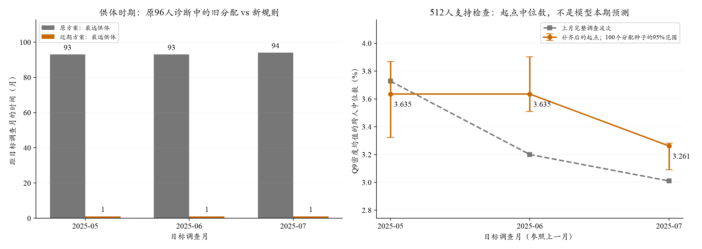
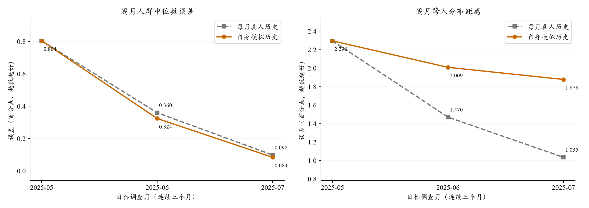
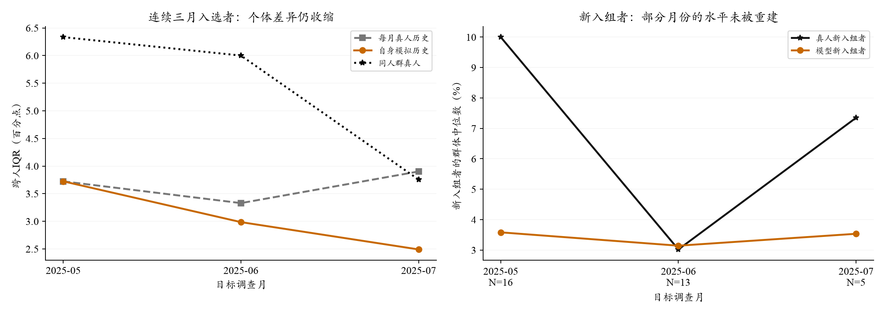

个人信念的跨月保持：三个月接续实验
研究问题：不再每月补充真人最新的历史回答，模型还能持续模拟同一个居民的通胀预期吗？
结果显示，总体中位数仍可接近真人，但个人之间的差异与排序逐渐丢失。两者需要分别评价。
主运行接入进展（零API）：三月各512人、单配置一次，共1536份完整输入，已通过3个官方引擎干跑单元；每月独立初始化，没有继续自主递推。尚无新模型拟合成绩。
查看配置、评价规则、保留问题及全量数据缺口。
新进展：新受访者的近期信念起点（零API）
旧供体确实可能太远：本次96人旧输入中，最远距目标月94个月。近期方案的六个检查单元均从相邻上月选到了供体。
检查的是“调查前怎样初始化”，没有生成新的模型回答，不能据此宣称本期预测误差改善。下方原三月模拟成绩保持不变。
1. 新规则如何工作？
- 保留本人近三个月内的合法实答，Q8/Q9分别处理；更早实答保留原日期作为较旧记忆，不冒充本人上月回答。
- 缺失或需要近期合成起点时，先找上月同类供体。优先年龄×学历×收入，候选不足时依次放宽；上月仍无支持才扩至近三个月，之后停止并报缺口，不静默跨年。
- 真实新人参考历史新人；间断/缺失回访者参考历史回访者；无法确认身份者另标。按供体调查权重抽取一次，保留联合Q8与十档Q9，不继承供体的家庭收入、就业或评价权重。
- 先检查合并起点与上期总体是否大致一致；有必要才小幅调整合成供体的抽取概率。本人实答和评价权重不改，不用本期SCE答案调分配。
本版支持保护值为至少5个候选、供体有效样本量至少3；概率校准相对原抽取概率限于1/4至4倍。它们是公开记录的工程保护值，不是从本期误差估计出的经济学系数，最终运行时随配置登记。
2. 数据检查发现什么？
2019-01—2025-10共82期、11,746个真实新人个人月的原题合法性覆盖检查中，年龄×学历×收入有31.9%的新人对应上月候选少于5人；放宽到年龄×收入后降至2.0%。这支持近期优先、有限放宽人口匹配，无需为了维持三项精确匹配而借很早的信念。

左：2025年5—7月旧96人输入与新规则中，供体距目标月的最大时距。右：512人SRS支持检查，保留真实旧答并合成补缺后的Q9起点分布；不是新LLM输出。来源：仅严格过去问卷、当期白名单人口及本地评价权重。
三月×96/512人共六个单元，近期方案在校准前均落入过去调查的抽样波动带，因此没有额外倾斜概率。512人Q9起点对上期总体的中位数偏差约0.09—0.43pp；这说明不必强行精确相等，也不表示整个分布已完全匹配。上表W1只比较初始信念与过去总体，不是本期模拟W1。
3. 统计上应如何理解？
软约束容差来自“从上月波次反复抽相同人数，中位数自然会波动多少”。这是固定过去资料下的抽样敏感性，不是全国设计置信区间。另用100个供体分配种子检查有限抽取波动：512人6月的Q9有96%分配落入容差，其他单元为100%；概率分布合格不保证每次有限抽取都严格命中。
概率校准约束Q8/Q9各自的总体中位数，不能据此识别新人的真实个人信念、尾部或完整联合分布。个人合成起点的W1、IQR及供体复用另行记录；下一轮模型增量必须与“直接保留这个起点”的基线比较。
4. 当前可用范围与下一步
本版是A线历史初始化的可复用实现与支持检查，旧批次输入和成绩不改。512人采用稳定优先级SRS，只用于覆盖检查；最终六格抽样确定后按同一设计登记容差。7月512人中1人的原始调查权重缺失：保留并初始化，未用默认1参与加权统计；权重来源仍需修复。
严格未来预测可能尚拿不到上月微观，必须另用截止前已公开旧微观与公开总体构造近期合成状态，不能调用本版未发布上月答卷。当前不为这项初始化单独追加付费模拟；随全量输入接入，再评价本期总体W1、真实回访者局部W1及新人条件分布。
配置、复算与输入措辞
公开聚合：本轮完整离线统计；详细说明：初始化与主线清单。原题、供体身份和逐人输入只留本地outputs。
python scripts/prepare_sce_entry_initialization.py --out outputs/<新的离线目录>
python -m pytest tests/test_sce_entry_initialization.py -q
模型侧只写“参考2025年4月同类居民分配的合成起始信念，并非你真实的上月作答”，随后列Q8/Q9；不写供体身份或权重，不伪造本人历史均值/次数。完整英文样例已保存于离线输出目录。
1. 这项实验研究项目的哪个环节？
此前大多数实验每月向模型提供该居民真实的上期回答。这给了模型一个与本人有关的信念起点，但尚未检验：模型能否把自己生成的信念保留到下个月，并继续合理更新。
本轮主要检查个人信念的保存、传递与更新。在P/E/B框架中，它连接P中的动态信念与模型的回答机制f：即使人口和环境匹配已经完成，模型每次回答后仍可能丢失一部分个人差异。这里没有比较新的新闻或价格机制。
三个“调查月”与“未来12个月预期”是两回事：模型分别回答2025年5、6、7月的SCE问卷，每次都预测从当时起未来12个月的通胀。我们重建的是居民回答，不是这三个月的实际CPI。
2. 实验配置与对照是什么？
- 人群与月份：2025年5/6/7月各96人，共120名不同受访者；71人三个月均入选。
- 真人历史参照组（灰）：每月重新读取此前可用的本人真实Q8/Q9，以及更早历史的均值和次数摘要。历史缺失按已登记规则处理。
- 自身历史递推组（橙）：首次进入本次模拟时与参照组使用同一起点，以后只接自己上次模拟的Q8/Q9及累计历史，不用新取得的真人回答刷新；间断后回来也保留原有模拟状态。
- 其余保持相同：同一人的当月人口特征、食品价格、采购角色、政策、随机3/8/20篇新闻和问卷相同。均用DeepSeek V3.2、固定SiliconFlow路由、温度0.5，直接填写Q8和Q9；每组生成两遍。
起点完全相同的回答共享请求，后续两组再分别接续。因此5月两组相同是设计结果，真正的接续比较从6月开始。变化的不仅是上期数字来源，也包括随之更新的历史摘要及信息先后标签；本轮检验的是整套接续方式。
首次进入本次模拟不等于首次参加SCE。真实新入组者没有本人上期回答，按严格更早匿名供体分配合成起点，明确标注。没有向模型发送本人本期通胀答案。
3. 实际得到多少数据？
96人×3月形成288个“个人月”，不是288个不同的人。两组各两遍共1152个回答位置，共同起点复用后实际发送912次请求，其中5次连接失败。失败按预先规则保留该组输入状态，并另报真实可用回答的结果。
真人Q9可评价281个人月，Q8可评价288个人月；两组、两遍都有实际可用Q9回答的共同人群为275个人月。主结果在固定有效人群上比较，并使用调查权重/抽样入选概率；每月先计算指标，再对三个月与两遍等权平均。重复生成增加的是模型随机性的观察，不增加真人样本量。
4. 重点指标表现如何，实际意味着什么？
改用自身模拟历史后，人群中位数MAE变化 -0.017 pp，跨人W1变化 +0.461 pp。负值表示更接近真人。 这是本次抽样人群的结果，不是全国官方SCE指标的误差。
 来源：本批完成的模型原答与独立真人评价，2025-05至07；设计权重，三月/两遍等权。IQR需接近真人，不能单看增大。
来源：本批完成的模型原答与独立真人评价，2025-05至07；设计权重，三月/两遍等权。IQR需接近真人，不能单看增大。
单位pp；Q9先由冻结方法从十档概率得到每个人的密度均值，再取跨人中位数。RMSE对各月/遍的中心误差平方后平均再开方。主口径包含明确标记的失败输入状态后备，Q9支持281个人月；实际输出共同支持275个人月，不能混用两种口径的最低值。
- 总体水平：中心MAE约0.421→0.404pp，RMSE约0.515→0.509pp。幅度很小，第二遍MAE并未改善，尚不能确认稳定收益。
- 人与人之间的分布：跨人W1约1.600→2.061pp，两个生成重复均变差。这表示整个人群的预期分布更偏离真人，不能由中位数接近掩盖。
- 个人差异与对应关系：跨人IQR约3.219→2.556pp，真人约5.114pp；个人排序与真人的相关性约0.527→0.418。模型不仅总体偏集中，对“谁应当预期更高”的区分也变弱。
- 单个人是否准确：个人预期均值的MAE约3.188→3.423pp。总体中位数误差小，并不表示大部分个体都预测准确。
这里的跨人W1与IQR比较的是“不同人的预期中心”。它们不是同一个人在Q9十档中表达的不确定性；不能据此说每个人的十档概率都出现了相同程度的退步。Q8独立结果见下方详情。
总体W1与真实回访者局部W1
总体W1只需要本期真人与模型回答，不需要上月值，反映全体重建。局部W1限定在真实相邻上月与本期Q9均可评价的人，帮助分开观察有本人历史时的表现。预期变化W1进一步需要真实上月记录，不能用合成上期冒充。
单位pp，均读取已完成缓存，无新增模拟。只能在每行的同人群内比较；总体W1不是分组W1的简单加权平均，不能用两行的差额直接计算初始化的“贡献”。
5. 进一步分析：差距发生在哪里？
5.1 总体误差没有爆炸，但相对分布差距扩大

各点平均两遍各自的月误差；每月人群存在正常轮换，连续71人的独立分组也一并报告。
 这张图统一限制在可计算旧信念的280个人月。图中数值不与上方完整主口径混称；各月先算加权统计，再平均两遍。
这张图统一限制在可计算旧信念的280个人月。图中数值不与上方完整主口径混称；各月先算加权统计，再平均两遍。
这里的“累积”主要体现在相对于每月补真人历史的分布差距：W1差从5月共同起点的0，增加到6月约0.539、7月约0.843pp。两个组的W1绝对值其实都下降，不能说自主链每个月的所有误差都变大。
在同一可用旧信念人群上比较基线
旧信念基线含明确的合成起点，不能全部称为“照抄本人上期”。只有真实相邻月记录的人，另有genuine_previous_only_support对照。变化W1只在有真实相邻上期Q9时计算。
5.2 固定同一批人检查，避免把轮换误当机制
分组只作描述，不解释为因果。新入组者在首次初始化时两组起点相同，本来就不应凭这个对照宣称初始化机制更好。部分组只覆盖部分月份，完整月/遍覆盖与缺失见JSON。

左图保留连续三月均入选的71人，按各月各题有效性评价，共207个人月；不是每月完全相同的有效答案集合。右图新入组者仅16/13/5人，7月稀疏，不能据此认定新入组者总是预期更高。
另限制为三个月Q9始终可计算的同一批68人，自主链IQR仍为3.723→3.047→2.491pp。因而人际差异收缩不能仅用轮换或无效答案解释；这是事后支持敏感性，不是新的预登记主指标。完整敏感性结果。
收缩本身不是错误的充分证据。真人之间的分歧也会随月变化。这里需要关注的是：在同一个月，与真人及真人历史参照组比较，自主链的W1和个人排序同时退步；固定人群的检查也保留了这个现象。
5.3 新入组者暴露了信息不足，也改变了总体评价
在相邻月回访者子样本中，每月补真人历史组的中心MAE约0.094pp；纳入新入组与间断回访者后，完整样本为0.421pp。这说明原先回访者的好成绩不能直接推广到全体居民。两个不同人群的误差之差不是可相加的“贡献率”，也不能据此把全部偏差归因于新入组。
5月新入组者的真人中位数约10%、模型约3.58%；6月两者接近；7月又有差距，但当月仅5人。这是需要继续检查的群体差距，不能据此认定新入组者总是预期更高，也不能证明供体初始化算法就是唯一原因——本轮没有对照不同的初始化方法。
6. 应当怎样解释，哪些结论还不能下？
可支持的判断：当前系统每月获得真实历史补充时，比完全依靠自身输出更能维持与真人接近的微观结构。这定位了信念接续环节的不足，并不表示此前人口与环境建设没有价值。
尚待验证的解释：模型可能每轮都向公共信息暗示的共同水平收缩，而个人经历、记忆与新冲击未被充分补回。反复输入自身回答会重复这种收缩。但本轮同时替换了个人历史及其摘要，尚未识别真实居民的心理更新系数，也不能区分信息缺失、历史表达和模型处理方式各自的因果贡献。
- 对照的含义：这是一项模拟系统内部的输入替换实验，不是对真人的随机干预。“每月真人历史”是有额外个人信息的参照，不能作为真实未来预测默认可得的资料。
- 样本与时间：只有三个连续月、120人；新入组者仅16/13/5人。两遍不是六个独立月份，不能据小幅平均差异宣称长期稳定改善。
- 新人的评价目标：没有本人历史时，合成先验不可能等于对该人真实信念的直接测量。应重点检验同类新人的分布和总体水平，不只要求逐人精确命中。
- 宏观与微观：与上月值加权或线性校准可以另行改善总体指标，但不能据此宣布个人差异已被修复；增加随机性同样不能保证恢复正确的个人排序。
Q8点预期独立结果
Q8支持288个人月；不因Q9无效删除有效Q8。
失败、归一化、每遍及其他分组
原答、错误与来源保存在私有账本；本页只给聚合。比例归一化、字段保留和密度失败后备的逻辑位置计数：
{
"observed_history:normalized_q9": 2,
"simulated_history:normalized_q9": 2,
"observed_history:q9_retained_input": 3,
"observed_history:q8_retained_input": 3,
"observed_history:density_fit_fallback": 1,
"simulated_history:density_fit_fallback": 1,
"simulated_history:q9_retained_input": 3,
"simulated_history:q8_retained_input": 2
}两遍、首次进入Core/持续/间断分组，以及真实上期基线均见完整聚合JSON。首次共享请求的两个逻辑位置不能当作独立回答。
7. 对下一步工作的含义
- 把“给定真实历史的重建能力”与“自主连续模拟能力”分别报告；本轮尚不能宣称B线已有效。
- 先用已有、严格更早的数据检查新入组供体的时期、匹配支持及分布；下一版规则不能根据本期个人答案反向配对。
- 独立冻结宏观组合的拟权/验证规则，再衔接连续月份主运行；保留微观差距，不以总体校准后的好成绩替代微观验证。
实际执行、费用与复现
DeepSeek V3.2，OpenRouter→固定SiliconFlow FP8，温度0.5、JSON、关闭思考、最多1024输出token。本批912次请求，1152逻辑位置，峰值128在途；API报告$0.6087，含未知费用预留$0.6244，上限$5。调用约5.4分钟，自动重试0次。
这是采用历史当期画像与月中信息截止的A线诊断；模型训练知识的时间风险仍在。三个月可以识别明显接线问题和短期漂移，不能证明长期误差稳定或全国预测成功。未按本轮成绩改提示、删人或重新选择供体。
本页只重新组织说明，原答、统计与图形不变；0新增API、0额外密度拟合。源码与协议见冻结执行包。